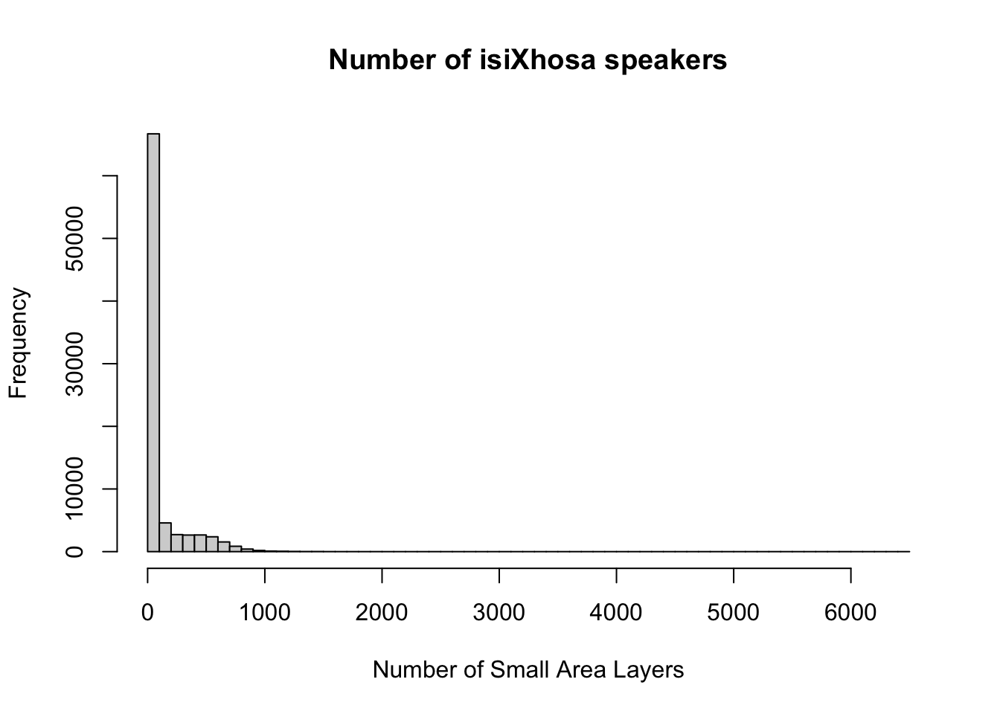

1 R for Data Analysis
1.1 Installation of R
R is a programming language originally designed for conducting statistical analysis and creating graphics. The major advantage of using R is that it can be used on any computer operating system, and is free for anyone to use and contribute to. Because of this, it has rapidly become the statistical language of choice for many academics and has a large user community with people constantly contributing new packages to carry out all manner of statistical, graphical, and importantly for us, geographical tasks.
Installing R takes a few relatively simple steps involving two pieces of software. First there is the R programme itself. Follow these steps to get it installed on your computer:
- Navigate in your browser to the download page: [Link]
- If you use a Windows computer, click on Download R for Windows. Then click on base. Download and install R 4.4.x for Windows. If you use a Mac computer, click on Download R for macOS and download and install R-4.4.x.arm64.pkg for Apple silicon Macs and R-4.4.x.x86_64.pkg for older Intel-based Macs.
That is it! You now have successfully installed R onto your computer. To make working with the R language a little bit easier we also need to install something called an Integrated Development Environment (IDE). We will use RStudio Desktop:
- Navigate to the official webpage of RStudio: [Link]
- Download and install RStudio Desktop on your computer (free version!)
After this, start RStudio to see if the installation was successful and you should see something similar to what is shown in Figure 1.
The main windows that we will be using are:
| Window | Purpose |
|---|---|
| Console | Where we write one-off code such as installing packages. |
| Files | Where we can see where our files are stored on our computer system. |
| Environment | Where our variables or objects are kept in memory. |
| Plots | Where the outputs of our graphs, charts and maps are shown. |
1.2 Customisation of R
Now we have installed R and RStudio, we need to customise R. Many useful R functions come in packages, these are free libraries of code written and made available by other R users. This includes packages specifically developed for data cleaning, data wrangling, visualisation, mapping, and spatial analysis. To save us some time, we will install all R packages that we will need for the workshop in one go. Start RStudio, and copy and paste the following code into the console window. You can execute the code by pressing the Return button on your keyboard. Depending on your computer’s specifications and the internet connection, this may take a short while.
R code
# install packages
install.packages(c("tidyverse", "haven", "sf", "tmap", "spdep"))For Linux and macOS users who are new to working with spatial data in R, this installation of some of these libraries may fail since additional (non-R) libraries are required (which are automatically installed for Windows users). If this is the case, please refer to the information pages of the sf library for instructions.
Once you have installed the packages, we need to check whether we can in fact load them into R. Copy and paste the following code into the console, and execute by pressing Return on your keyboard again.
R code
# load packages
library(tidyverse)
library(haven)
library(sf)
library(tmap)
library(spdep)You will see some information printed to your console but as long as you do not get any of the messages below, the installation was successful. If you do get any of the messages below it means that the package was not properly installed, so try to install the package in question again.
Error: package or namespace load failed for <packagename>Error: package '<packagename>' could not be loadedError in library(<packagename>) : there is no package called '<packagename>'
Many packages require additional software components, known as dependencies, to function properly. Occasionally, when you install a package, some of these dependencies might not be installed automatically. If you encounter errors related to a package that you did not explicitly install, it is likely due to a missing dependency. To resolve this, identify the missing dependency and install it using the command install.packages('<dependencyname>'). Afterward, try loading your packages again.
1.3 Getting started with R
Unlike traditional statistical analysis software like Microsoft Excel or Stata, which often rely on point-and-click interfaces, R requires users to input commands to perform tasks such as loading datasets and fitting models. This command-based approach is typically done by writing scripts, which not only document your workflow but also allow for easy repetition of tasks.
If you are familiar with Stata’s do-file you will find that the approach to programming in R is comparable.
Let us begin by exploring some of R’s built-in functionality through a simple exercise: creating a few variables and performing basic calculations. Open your console, and let us start with some quick math. At its core, every programming language can be used as a powerful calculator.
In your RStudio console, you will notice a prompt sign > on the left-hand side. This is where you can directly interact with R. If any text appears in red, it indicates an error or warning. When you see the >, it means R is ready for your next command. However, if you see a +, it means you have not completed the previous line of code. This often happens when brackets are left open or a command is not properly finished as R expected.
Type in 10 * 12 into the console and execute.
R code
# multiplication
10 * 12[1] 120Once you press return, you should see the answer of 120 returned below.
1.3.1 Storing variables
Instead of using raw numbers or standalone values, it is more effective to store these values in variables, which allows for easy reference later. In R, this process is known as creating an object, and the object is stored as a variable. To assign a value to a variable, use the <- symbol. Let us create two variables to experiment with this concept.
Type in ten <- 10 into the console and execute.
R code
# store a variable
ten <- 10You will see nothing is returned in the console. However, if you check your environment window, you will see that a new variable has appeared, containing the value you assigned.
Type in twelve <- 12 into the console and execute.
R code
# store a variable
twelve <- 12Again, nothing will be returned to the console, but be sure to check your environment window for the newly created variable. We have now stored two numbers in our environment and assigned them variable names for easy reference. R stores these objects as variables in your computer’s RAM memory, allowing for quick processing. Keep in mind that without saving your environment, these variables will be lost when you close R. Now that we have our variables, let us proceed with a simple multiplication:
Type in ten * twelve into the console and execute.
R code
# using variables
ten * twelve[1] 120You should see the output in the console of 120. While this calculation may seem trivial, it demonstrates a powerful concept: these variables can be treated just like the values they contain.
Next, type in ten * twelve * 8 into the console and execute.
R code
# using variables and values
ten * twelve * 8[1] 960You should get an answer of 960. As you can see, we can mix variables with raw values without any problems. We can also store the output of variable calculations as a new variable.
Type output <- ten * twelve * 8 into the console and execute.
R code
# store output
output <- ten * twelve * 8Because we are storing the output of our maths to a new variable, the answer is not returned to the screen but is kept in memory.
1.3.2 Accessing variables
We can ask R to return the value of the output variable by simply typing its name into the console. You should see that it returns the same value as the earlier calculation.
R code
# return value
output[1] 9601.3.3 Text variables
We can also store variables of different data types, not just numbers but text as well.
Type in str_variable <- "Hello Pretoria" into the console and execute.
R code
# store a variable
str_variable <- "Hello Pretoria"We have just stored our sentence made from a combination of characters. A variable that stores text is known as a string. A string is always denoted by the use of single ('') or double ("") quotation marks.
Type in str_variable into the console and execute.
R code
# return variable
str_variable[1] "Hello Pretoria"You should see our entire sentence returned, enclosed in quotation marks ("").
1.3.4 Calling functions
We can also call a function on our variable. For example, we can ask R to print our variable, which will give us the same output as accessing it directly via the console.
Type in print(str_variable) into the console and execute.
R code
# printing a variable
print(str_variable)[1] "Hello Pretoria"You can type ?print into the console to learn more about the print() function. This method works with any function, giving you access to its documentation. Understanding this documentation is crucial for using the function correctly and interpreting its output.
R code
# open documentation of the print function
?printIn many cases, a function will take more than one argument or parameter, so it is important to know what you need to provide the function with in order for it to work. For now, we are using functions that only need one required argument although most functions will also have several optional or default parameters.
1.3.5 Inspecting variables
Within the base R language, there are various functions that have been written to help us examine and find out information about our variables. For example, we can use the typeof() function to check what data type our variable is.
Type in typeof(str_variable) into the console and execute.
R code
# call the typeof() function
typeof(str_variable)[1] "character"You should see the answer: character. As evident, our str_variable is a character data type. We can try testing this out on one of our earlier variables too.
Type in typeof(ten) into the console and execute.
R code
# call the typeof() function
typeof(ten)[1] "double"You should see the answer: double. Alternatively, we can check the class of a variable by using the class() function.
Type in class(str_variable) into the console and execute.
R code
# call the class() function
class(str_variable)[1] "character"In this case, you will see the same result as before because, in R, both the class and type of a string are character. Other programming languages might use the term string instead, but it essentially means the same thing.
Type in class(ten) into the console and execute.
R code
# call the class() function
class(ten)[1] "numeric"In this case, you will get a different result because the class of this variable is numeric. Numeric objects in R can be either doubles (decimals) or integers (whole numbers). You can test whether the ten variable is an integer by using specific functions designed for this purpose.
Type in is.integer(ten) into the console and execute.
R code
# call the integer() function
is.integer(ten)[1] FALSEYou should see the result FALSE. As we know from the typeof() function, the ten variable is stored as a double, so it cannot be an integer.
Whilst knowing how to distinguish between different data types might not seem important now, the difference betwee a double and an integer can quite easily lead to unexpected errors.
We can also check the length of our a variable.
Type in length(str_variable) into the console and execute.
R code
# call the length() function
length(str_variable)[1] 1You should get the answer 1 because we only have one set of characters. We can also determine the length of each set of characters, which tells us the length of the string contained in the variable.
Type in nchar(str_variable) into the console and execute.
R code
# call the nchar() function
nchar(str_variable)[1] 14You should get an answer of 14.
1.3.6 Creating multi-value objects
Variables are not constricted to one value, but can be combined to create larger objects. Type in two_str_variable <- c("This is our second variable", "It has two parts to it") into the console and execute.
R code
# store a new variable
two_str_variable <- c("This is our second string variable", "It has two parts to it")In this code, we have created a new variable using the c() function, which combines values into a vector or list. We provided the c() function with two sets of strings, separated by a comma and enclosed within the function’s parentheses.
Let us now try both our length() and nchar() on our new variable and see what the results are:
R code
# call the length() function
length(two_str_variable)[1] 2# call the nchar() function
nchar(two_str_variable)[1] 34 22You should notice that the length() function now returned a 2 and the nchar() function returned two values of 34 and 22.
You may have noticed that each line of code in the examples includes a comment explaining its purpose. In R, comments are created using the hash symbol #. This symbol instructs R to ignore the commented line when executing the code. Comments are useful for understanding your code when you revisit it later or when sharing it with others.
Extending the concept of multi-value objects to two dimensions results in a dataframe. A dataframe is the de facto data structure for most tabular data. We will use functions from the tidyverse library, a suite of packages—to load a data file and conduct exploratory data analysis. Within the tidyverse, dataframes are referred to as tibbles. Some of the most important and useful functions come from the tidyr and dplyr packages, including:
| Package | Function | Use to |
|---|---|---|
dplyr |
select() |
select columns |
dplyr |
filter() |
select rows |
dplyr |
mutate() |
transform or recode variables |
dplyr |
summarise() |
summarise data |
dplyr |
group_by() |
group data into subgroups for further processing |
tidyr |
pivot_longer() |
convert data from wide format to long format |
tidyr |
pivot_wider() |
convert long format dataset to wide format |
For more information on the tidyverse have a look at www.tidyverse.org.
1.4 RStudio projects
In RStudio, scripts allow us to build and save code that can be run repeatedly. We can organise these scripts into RStudio projects, which consolidate all files related to an analysis such as input data, R scripts, results, figures, and more. This organisation helps keep track of all data, input, and output, while enabling us to create standalone scripts for each part of our analysis. Additionally, it simplifies managing directories and filepaths.
Navigate to File -> New Project -> New Directory, and create a folder with the name GeoSpatial-Workshop24. Click on Create Project. You should now see your main window switch to this new project and when you check your files window, you should see a new R Project called GeoSpatial-Workshop24.
Please ensure that folder names and file names do not contain spaces or special characters such as * . " / \ [ ] : ; | = , < ? > & $ # ! ' { } ( ). Different operating systems and programming languages deal differently with spaces and special characters and as such including these in your folder names and file names can cause many problems and unexpected errors. As an alternative to using white space you can use an underscore _ or hyphen - if you like.
1.5 Bathetha isiXhosa
With the basics covered, let us dive into loading a real dataset, performing data cleaning, and conducting some exploratory data analysis on the isiXhosa speaking population. We will work with a dataset that contains counts of the primary languages spoken in South African, sourced from the South African Census Community Profiles 2011 and made available through the DataFirst data service. You can download a copy of the file through the link below and save it in your project folder under data/attributes.
| File | Type | Link |
|---|---|---|
| SA Census 2011 Language Table | .dta |
Download |
To get started, let us create our first script. File -> New File -> R Script. Create a folder named scripts, and save your script as 01-language-analysis.r.
We will start by loading the libraries that we will need:
R code
# load libraries
library(tidyverse)
library(haven)In RStudio, there are two primary ways to run a script: all at once or by executing individual lines or chunks of code. As a beginner, it is often beneficial to use the line-by-line approach, as it allows you to test your code interactively and catch errors early.
To run line-by-line:
- By clicking: Highlight the line or chunk of code you want to run, then go to Code and select Run selected lines.
- By key commands: Highlight the code, then press
Ctl(orCmdon Mac) +Return.
To run the whole script:
- By clicking: In the scripting window, click Run in the top-right corner and choose Run All.
- By key commands: Press
Option+Ctrl(orCmd) +R.
If a script gets stuck or you realise there is an error in your code, you may need to interrupt R. To do this, go to Session -> Interrupt R. If the interruption doesn’t work, you might need to terminate and restart R.
1.5.1 Loading data
Next, we can load the language.dta file into R. Using functions from the haven library, R is capable to read a large range of different filetypes - Stata’s .dta file included.
R code
# load data
att <- read_dta("data/attributes/language.dta")If using a Windows machine, you may need to substitute your forward-slashes (/) with two backslashes (\\) whenever you are dealing with file paths.
Let us have a look at the dataframe:
R code
# inspect columns, rows
ncol(att)[1] 28nrow(att)[1] 84908# inspect data
head(att)# A tibble: 6 × 28
sal_code sp_code sp_name mp_code mp_name mn_mdb_c mn_code mn_name dc_mdb_c
<dbl> <dbl> <chr> <dbl> <chr> <chr> <dbl> <chr> <chr>
1 1600001 160002001 Matzikam… 160002 Matzik… WC011 160 Matzik… DC1
2 1600002 160002001 Matzikam… 160002 Matzik… WC011 160 Matzik… DC1
3 1600003 160002001 Matzikam… 160002 Matzik… WC011 160 Matzik… DC1
4 1600004 160010001 Vredenda… 160010 Vreden… WC011 160 Matzik… DC1
5 1600005 160002001 Matzikam… 160002 Matzik… WC011 160 Matzik… DC1
6 1600006 160002001 Matzikam… 160002 Matzik… WC011 160 Matzik… DC1
# ℹ 19 more variables: dc_code <dbl>, dc_name <chr>, pr_code <dbl>,
# pr_name <chr>, lng_1 <dbl>, lng_2 <dbl>, lng_3 <dbl>, lng_4 <dbl>,
# lng_5 <dbl>, lng_6 <dbl>, lng_7 <dbl>, lng_8 <dbl>, lng_9 <dbl>,
# lng_10 <dbl>, lng_11 <dbl>, lng_12 <dbl>, lng_13 <dbl>, lng_14 <dbl>,
# lng_15 <dbl># inspect column names
names(att) [1] "sal_code" "sp_code" "sp_name" "mp_code" "mp_name" "mn_mdb_c"
[7] "mn_code" "mn_name" "dc_mdb_c" "dc_code"
[ reached getOption("max.print") -- omitted 18 entries ]To access specific columns or rows in a dataframe, we can use indexing. Indexing refers to the numbering assigned to each element within a data structure, allowing us to precisely select and manipulate data.
In R, indexing begins at 1, meaning that the first element of any data structure is accessed with the index [1]. This is different from many other programming languages, such as Python or Java, where indexing typically starts at 0. For example, to access the first row of a dataframe, you would use dataframe[1, ], and to access the first column, you would use dataframe[, 1]. The comma separates the row and column indices, with the absence of a number indicating all rows or columns respectively.
R code
# index rows
att[, 1]# A tibble: 84,908 × 1
sal_code
<dbl>
1 1600001
2 1600002
3 1600003
4 1600004
5 1600005
6 1600006
7 1600007
8 1600008
9 1600009
10 1600010
# ℹ 84,898 more rows# index columns
att[1, ]# A tibble: 1 × 28
sal_code sp_code sp_name mp_code mp_name mn_mdb_c mn_code mn_name dc_mdb_c
<dbl> <dbl> <chr> <dbl> <chr> <chr> <dbl> <chr> <chr>
1 1600001 160002001 Matzikam… 160002 Matzik… WC011 160 Matzik… DC1
# ℹ 19 more variables: dc_code <dbl>, dc_name <chr>, pr_code <dbl>,
# pr_name <chr>, lng_1 <dbl>, lng_2 <dbl>, lng_3 <dbl>, lng_4 <dbl>,
# lng_5 <dbl>, lng_6 <dbl>, lng_7 <dbl>, lng_8 <dbl>, lng_9 <dbl>,
# lng_10 <dbl>, lng_11 <dbl>, lng_12 <dbl>, lng_13 <dbl>, lng_14 <dbl>,
# lng_15 <dbl># specific value
att[1, 1]# A tibble: 1 × 1
sal_code
<dbl>
1 1600001Alternatively, you can access the data within individual columns by referring to their names using the $ operator. This allows you to easily extract and work with a specific column without needing to know its position in the dataframe. For example, if your dataframe is named dataframe and you want to access a column named age, you would use dataframe$age. This method is especially useful when your data has many columns or when the column positions may change, as it relies on the column names rather than their index numbers.
1.5.2 Exploring data
Now that we have loaded and inspected our data, we can examine its distribution. We will focus on the column that contains the counts of individuals who speak isiXhosa as their primary language, aggregated by Small Area Layer—the most granular geographic level available in the 2011 Census. This data is stored in the lng_4 column of the dataframe.
R code
# mean
mean(att$lng_4)[1] 95.99431# median
median(att$lng_4)[1] 9# range
range(att$lng_4)[1] 0 6465# summary
summary(att$lng_4) Min. 1st Qu. Median Mean 3rd Qu. Max.
0.00 0.00 9.00 95.99 72.00 6465.00 We can also call some functions to quickly draw a boxplot, histogram, or scatterplot:
R code
# boxplot
boxplot(att$lng_4, horizontal = TRUE)
R code
# histogram
hist(att$lng_4, breaks = 50, xlab = "Number of Small Area Layers", main = "Number of isiXhosa speakers")
R code
# bivariate plot
plot(att$lng_4, att$lng_2, xlab = "isiXhosa", ylab = "English")
1.5.3 Subsetting data
The dataset is quite extensive, containing counts for all 84,908 Small Area Layers. To make our analysis more manageable, let’s focus on a subset of the data, specifically zooming in on Cape Town. We can achieve this by filtering the data using the dc_name column, which corresponds to the District Municipality Name.
R code
# prepare data: filter out Cape Town
att <- att |>
filter(dc_name == "City of Cape Town")The code above uses a pipe function: |>. The pipe operator allows you to pass the output of one function directly into the next, streamlining your code. While it might seem a bit confusing at first, you will find that it makes your code faster to write and easier to read. More importantly, it reduces the need to create multiple intermediate variables to store outputs.
In this case, we have overwritten our initial object, though this is not strictly necessary. Our object now contains a subset of the full language dataset that we initially loaded.
R code
# inspect data
head(att)# A tibble: 6 × 28
sal_code sp_code sp_name mp_code mp_name mn_mdb_c mn_code mn_name dc_mdb_c
<dbl> <dbl> <chr> <dbl> <chr> <chr> <dbl> <chr> <chr>
1 1990001 199014025 Paarden … 199014 Milner… CPT 199 City o… CPT
2 1990002 199016089 Mimosa 199016 Bellvi… CPT 199 City o… CPT
3 1990003 199041008 Signal H… 199041 Cape T… CPT 199 City o… CPT
4 1990004 199017021 Durbanvi… 199017 Durban… CPT 199 City o… CPT
5 1990005 199053012 Pine Hav… 199053 Simon'… CPT 199 City o… CPT
6 1990006 199030007 Guguleth… 199030 Gugule… CPT 199 City o… CPT
# ℹ 19 more variables: dc_code <dbl>, dc_name <chr>, pr_code <dbl>,
# pr_name <chr>, lng_1 <dbl>, lng_2 <dbl>, lng_3 <dbl>, lng_4 <dbl>,
# lng_5 <dbl>, lng_6 <dbl>, lng_7 <dbl>, lng_8 <dbl>, lng_9 <dbl>,
# lng_10 <dbl>, lng_11 <dbl>, lng_12 <dbl>, lng_13 <dbl>, lng_14 <dbl>,
# lng_15 <dbl>Our code appears to have worked successfully.
1.5.4 Aggregating data
The next thing that we probably want to do is standardise our data. A common challenge with spatial data is that the spatial units aren not always the same size — some Small Area Layers may have larger populations, while others have fewer residents. This makes it difficult to compare absolute counts fairly. To address this, we can sum the counts across all relevant columns to determine the total number of speakers in each area. Then, we can calculate the proportion of isiXhosa speakers within each Small Area Layer:
R code
# prepare data: sum across
att <- att |>
rowwise() |>
mutate(sal_pop = sum(across(starts_with("lng")), na.rm = TRUE))
# prepare data: calculate percentages
att <- att |>
mutate(sal_prop_xhosa = lng_4/sal_pop)
# inspect data
head(att)# A tibble: 6 × 30
sal_code sp_code sp_name mp_code mp_name mn_mdb_c mn_code mn_name dc_mdb_c
<dbl> <dbl> <chr> <dbl> <chr> <chr> <dbl> <chr> <chr>
1 1990001 199014025 Paarden … 199014 Milner… CPT 199 City o… CPT
2 1990002 199016089 Mimosa 199016 Bellvi… CPT 199 City o… CPT
3 1990003 199041008 Signal H… 199041 Cape T… CPT 199 City o… CPT
4 1990004 199017021 Durbanvi… 199017 Durban… CPT 199 City o… CPT
5 1990005 199053012 Pine Hav… 199053 Simon'… CPT 199 City o… CPT
6 1990006 199030007 Guguleth… 199030 Gugule… CPT 199 City o… CPT
# ℹ 21 more variables: dc_code <dbl>, dc_name <chr>, pr_code <dbl>,
# pr_name <chr>, lng_1 <dbl>, lng_2 <dbl>, lng_3 <dbl>, lng_4 <dbl>,
# lng_5 <dbl>, lng_6 <dbl>, lng_7 <dbl>, lng_8 <dbl>, lng_9 <dbl>,
# lng_10 <dbl>, lng_11 <dbl>, lng_12 <dbl>, lng_13 <dbl>, lng_14 <dbl>,
# lng_15 <dbl>, sal_pop <dbl>, sal_prop_xhosa <dbl>You can further inspect the results using the View() function.
We now have the percentage of people who speak isiXhosa as their primary language for each Small Area Layer. To provide a more meaningful representation, however, we can aggregate the data by sub-places. This involves grouping our data by sp_code, which contains unique sub-place codes. We will then:
- Sum the number of isiXhosa speakers within each sub-place and store this in a new variable.
- Sum the total number of people within each sub-place and store this in another new variable.
- Extract the distinct values for each sub-place.
By using the pipe function again, we can chain these steps together efficiently as follows:
R code
# prepare data: aggregate small areas to sub places
att <- att |>
group_by(sp_code) |>
mutate(sp_pop = sum(sal_pop)) |>
mutate(sp_xhosa = sum(lng_4)) |>
ungroup() |>
distinct(sp_code, sp_pop, sp_xhosa)
# inspect data
head(att)# A tibble: 6 × 3
sp_code sp_pop sp_xhosa
<dbl> <dbl> <dbl>
1 199014025 12 0
2 199016089 1212 0
3 199041008 12 0
4 199017021 7893 105
5 199053012 9 0
6 199030007 55242 47385You can further inspect the results using the View() function.
We can save this dataset so that we can easily load it the next time we want to work with this by writing it to a .csv file.
R code
# write data
write_csv(x = att, file = "data/attributes/language.csv")1.6 Assignment
This concludes this session. Please try to complete the following tasks:
- Create a histogram showing the distribution of the number of isiXhosa speakers in Cape Town, grouped by sub-place.
- Create a boxplot of the proportion of isiXhosa-speakers in Cape Town, grouped by sub place.
Next, use the link below to download another dataset sourced from the South African Census Community Profiles 2011 that contains information on internet access. Save the file in your project folder under data/attributes.
| File | Type | Link |
|---|---|---|
| SA Census 2011 Internet Access Table | .dta |
Download |
Use this dataset to:
- Create a histogram of the distribution of the number of people with
internet access at homein the City of Johannesburg, grouped by sub-place. - Create a boxplot of the proportion of people with
internet access at homein the City of Johannesburg, grouped by sub-place.